Project Description
We built an application designed to help individuals and families experiencing homelessness with the goal of making the housing application process simpler and easier. The application helps users to register, create families, enter their information, upload required documentation, and generate a scannable QR code containing their information. This QR code acts as a digital connection between clients and case workers.
The system is composed of a Flutter-based frontend, a Go-based backend API, and a PostgreSQL database for storage. For security, the app supports account deletion, role-based access (clients, case workers, and admins), and optional two-factor authentication. Caseworkers may find it useful to have all their clients information on a browser, after scanning multiple clients' QR codes, to help them find housing and other resources. The clients will have access to a phone, so it will be more accessible for them to have an app. So we made it cross-platform, so it can be used on both web and mobile, if needed.
First we have the login page, where the user can enter their email and password. If they don't have an account, they can click on the "Create Account" button to register.
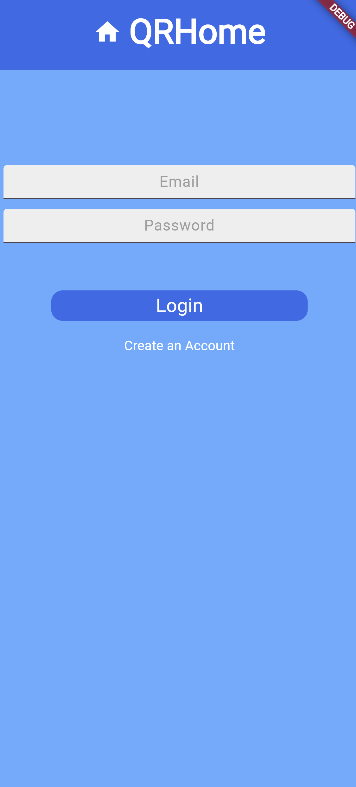This is the registration page, where the user can enter their information to create an account. They can enter their name, email, password, and confirm their password. They also will choose if they are a client or case worker as well as enter their birthday date.
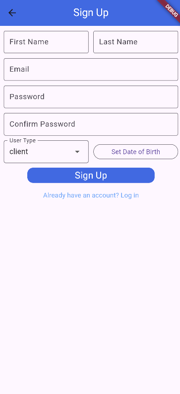Client View
This is the home page for clients, where the user can see their information and the QR code that they can share with their case worker. The navigation bar to the side allows the user to navigate to the Application Form, Family, your uploads, your connected caseworkers, app information, and the Log Out Button. You can get to the navigation by pressing the hamburger button in the top left corner.
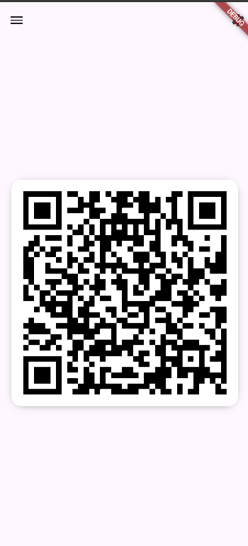 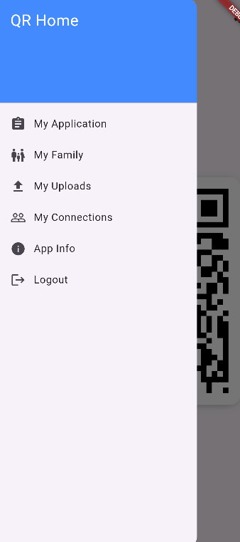When you select Application Form, the user can see their application form and fill it out. They can enter their personal information, family information, and other details required for the housing application. This is a long form, so we have a navigation bar at the top to show the user how far they are in the form and what sections are left. This is also where the user can upload their documents, such as their ID, birth certificate, and other required documents.
 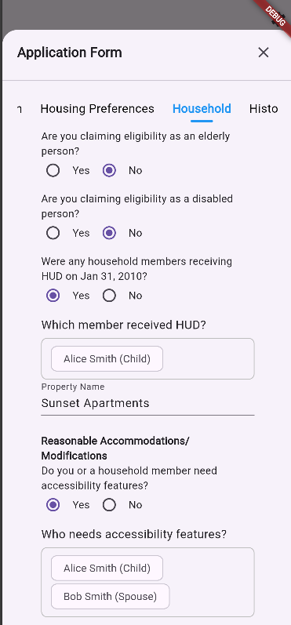
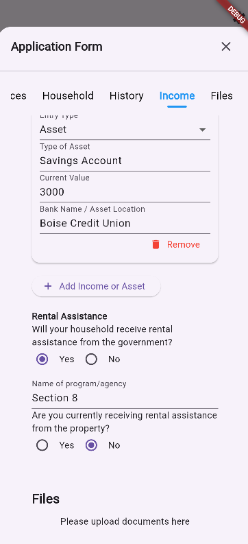
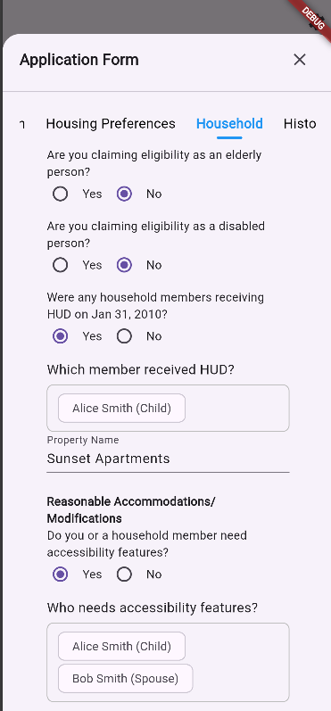
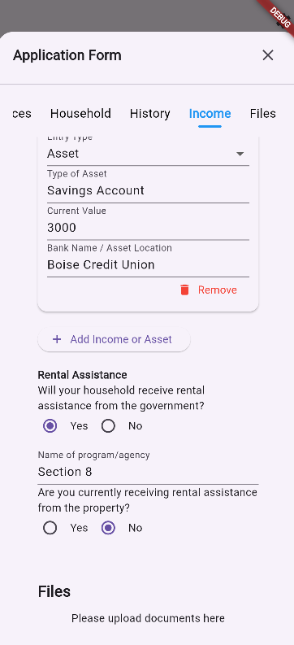
When you select Family, the user can see their family members and add or remove them from their family, as well as input their details and information.
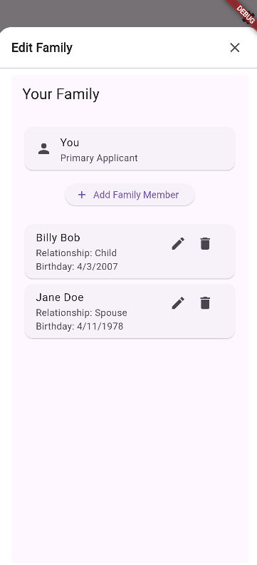When you select your uploads, the user can see their uploaded documents and delete them if they want to. This is where they upload documents such as their ID, birth certificate, and other required documents.
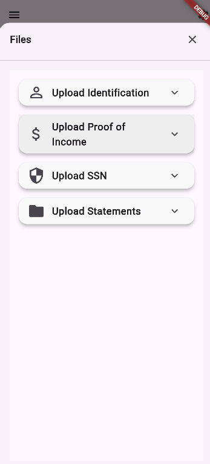When you select your connections, the user can see their connected case workers and remove them if they want to. This is to ensure that the user has control over who has access to their information. They can also see their email address.
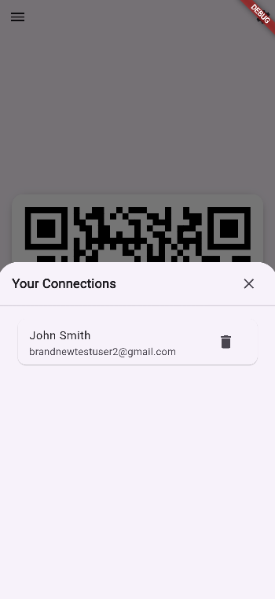This is the settings page, where the user can see their account information. They can also delete their account if they want to. This is also where the user can enable two-factor authentication, which will send a code to their email or phone number to verify their identity when logging in.
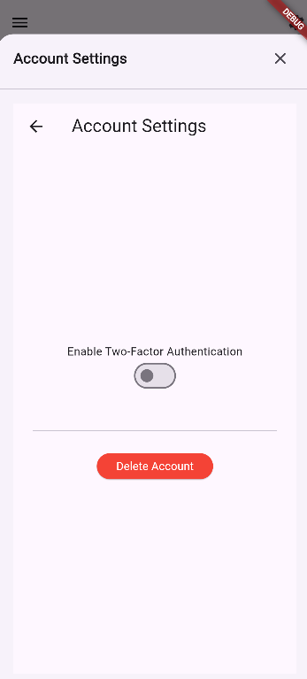Case worker View
This is the home page for case workers, where the user can see their clients and access their information. They have the abilty to view their clients' families, application forms, and uploads. They can also remove clients from their dashboard. The only way to add clients is by scanning their QR code, which will add them to the case worker's dashboard. This is to ensures that the only case worker has permission to access the client's personal information.
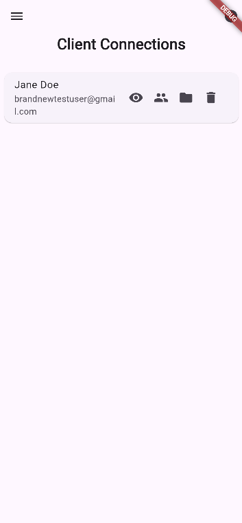This is the what shows when the case worker scans the QR code. It will show the client name and ask if add them to their dashboard.
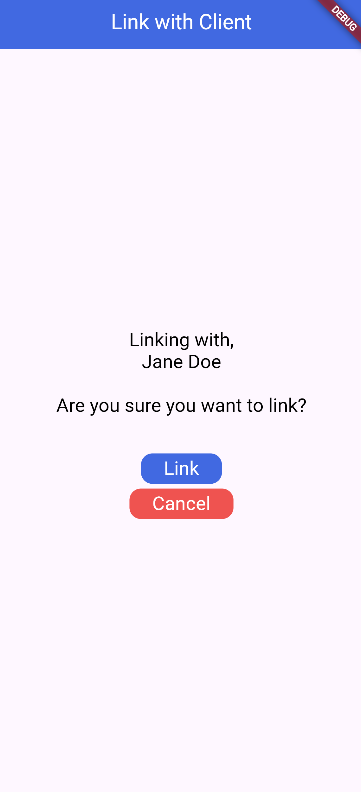License
SPDX-License-Identifier: MPL-2.0